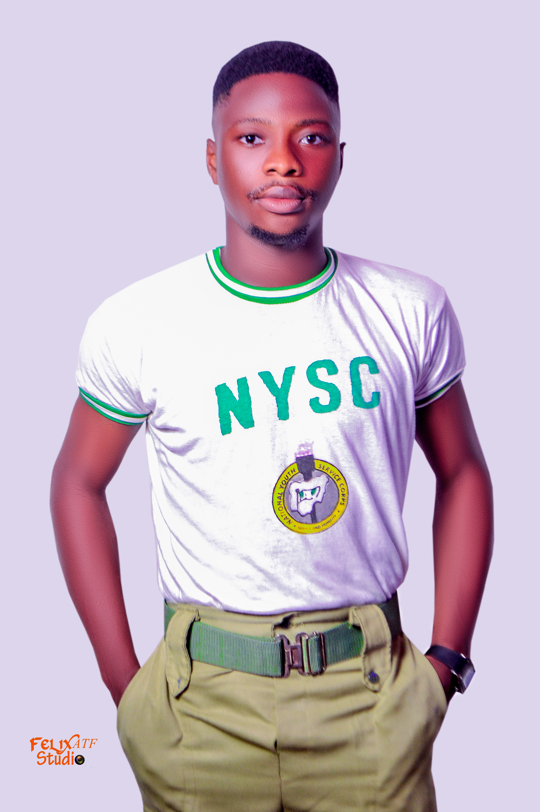

My background
I am David Osinnow Adewale, Born to the family of Mr. Osinnowo Olayinka Michael and Mrs. Osinnowo Oluwatoyin, I was born in a town called Ikorodu that’s where I grew up. I attended NNPC staff school for my primary education, ifelodun senior high school for my secondary education and proceeded to Lagos state university for my bachelor’s degree. I have interest in Music and Technology. My biggest accomplishment in life is to play saxophone for notable people and more also in churches and I was made the CDS (community development service ) president during my youth service (NYSC). My hubbies are playing saxophone and working on the computer. I want to be remembered for contributing my little selfless service to humanity with integrity, loyalty and honesty. My Parent are always supportive of my career pursuit and I give glory to GOD for the little I have achieved.
